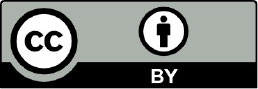
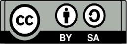
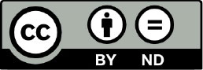
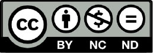
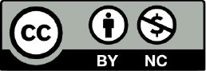
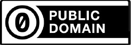

Módulo 2 . Aula 3
Domínio público, Transferência de direitos e licenças Creative Commons
Módulo 2 . Aula 3
Domínio público, Transferência de direitos e licenças Creative Commons
 Objetivos da
aula
Objetivos da
aula
Nesta aula, você será apresentado ao conceito de domínio público, a questão da transferência e contratos de direitos autorais e as licenças Creative Commons. Ao final, você será capaz de:
- Conhecer os critérios para determinar que uma obra é de domínio público.
- Identificar a existência de acordos internacionais que estabelecem prazos mínimos de proteção, mas também a incidência de legislações nacionais que podem ampliar o período.
- Reconhecer as situações em que há necessidade de um contrato ou autorização de direitos autorais e aquelas que não é necessário solicitar autorização do titular.
- Conhecer o conteúdo mínimo dos instrumentos jurídicos para transferência de direitos autorais.
- Compreender o que são as licenças Creative Commons e suas características.
- Diferenciar contratos privados de licenças Creative Commons.
Domínio público dos direitos autorais
Há três momentos em que a interseção entre os interesses públicos e privados se apresenta mais claramente:
- O que é ou não protegido;
- O domínio público;
- As limitações.
Os direitos sobre estas obras estão sujeitos ao transcurso do prazo de proteção. Como a proteção, cujo núcleo é a exclusividade, é temporária, eventualmente os direitos patrimoniais chegam ao fim. A partir deste momento as obras entram no domínio público, e os direitos patrimoniais não são mais ‘direitos reservados’. Foram elevados ao domínio púbico.
Entram em domínio público todas as obras sobre as quais acabou o prazo de proteção. A partir daí, qualquer um pode fazer qualquer uso da obra, inclusive comercial, sem necessidade de autorização ou remuneração.
Não se pode, contudo, se apropriar da obra em domínio público como se sua fosse. Por exemplo, atribuindo a autoria a si mesmo ou a outra pessoa que não o(s) autor(es); mutilando a obra e divulgando-a como se fosse a obra integral; ou ainda impedindo terceiros de também usar as obras em domínio público.
Tempo de duração da proteção do Direito de Autor e domínio público
O cálculo do tempo de duração da proteção do Direito de Autor é estabelecido pela legislação nacional de cada país. Mas, de acordo com a Convenção de Berna e o Acordo TRIPS, o prazo mínimo geral é de 50 anos após a morte do autor. Assim, todos os países que fazem parte da Organização Mundial do Comércio (OMC) e aderiram ao Acordo TRIPS, e à Convenção de Berna devem proteger a obra no mínimo por este prazo, podendo, porém, atribuir localmente, mais tempo de proteção.
No Brasil, as obras são protegidas, em regra geral, por 70 anos após a morte do(s) autor(es), com exceção das obras fotográficas, audiovisuais e coletivas, que duram por 70 anos contados da publicação. Após este prazo, todas as obras entram no domínio público no país e poderão ser livremente usadas por qualquer um, sem necessidade de pagamento ou autorização.
Eis o que diz a legislação sobre o prazo geral (mas há especificidades):
Art. 41
"Os direitos patrimoniais do autor perduram por setenta anos contados de 1º de janeiro do ano subsequente ao de seu falecimento, obedecida a ordem sucessória da lei civil. Parágrafo único. Aplica-se às obras póstumas o prazo de proteção a que alude o caput deste artigo."
Note que não é preciso saber o dia exato do falecimento do autor, mas apenas o ano, pois este prazo começa a contar a partir de 1º de janeiro do ano seguinte ao falecimento, e termina 70 anos depois em 31 de dezembro. Observe que, por isso, sempre há novas obras entrando em domínio público em 1º de janeiro de cada ano.
É importante observar que, no caso de coautoria, o prazo de duração começa a contar após o falecimento do último dos coautores, conforme estabelece o artigo 42. Nem todas as obras contam o prazo de proteção a partir do falecimento do autor. As obras fotográficas, audiovisuais (artigo 43), coletivas ou as obras anônimas e pseudônimas (artigo 44) têm a duração da proteção contada de sua divulgação.
Independentemente, o prazo é sempre calculado a partir do final do ano do falecimento do autor ou da publicação para obras coletivas, fotográficas e audiovisuais, o que, do ponto de vista legal, tem uma vantagem prática: não é preciso conhecer a data exata do óbito, da publicação ou da divulgação, pois basta saber o ano.
Os prazos e condições do domínio público no Brasil estão sintetizados como se segue:
| Obra | Prazo | Titularidade | Início da contagem |
|---|---|---|---|
| Autoria Individual | 70 anos | Autor, ou a quem tiver cedido os direitos | 1º de janeiro do ano subsequente ao falecimento do autor. |
| Coautoria indivisível | 70 anos | Aos autores em conjunto, ou a quem tiverem cedido os direitos | Da morte do último coautor sobrevivente. |
| Obras anônimas | 70 anos | Editor | 1º de janeiro do ano posterior ou da primeira publicação. |
| Obras pseudônimas | 70 anos | Editor | 1º de janeiro do ano posterior ou da primeira publicação. |
| Obras audiovisuais | 70 anos | Produtor | 1º de janeiro do ano posterior a publicação. |
| Obras fotográficas | 70 anos | Autor, ou a quem tiver cedido os direitos | 1º de janeiro do ano posterior a publicação. |
| Obras Coletivas | 70 anos | Organizador | 1º de janeiro do ano posterior a publicação. |
Assim, de acordo com a legislação brasileira, em 2024, estão em domínio público no Brasil:
- As obras dos autores falecidos até 1953;
- No caso de coautores, deve-se contar da morte do último dos coautores;
- As fotografias divulgadas publicamente até 1953;
- As obras audiovisuais divulgadas publicamente até 1953;
- As obras coletivas divulgadas publicamente até 1953;
- As obras anônimas ou pseudônimas divulgadas publicamente até 1953, que não tiverem seus autores conhecidos até o início do domínio público;
- As obras de autores que faleceram sem deixar herdeiros.
Outro aspecto a se considerar é que, na prática, não interessa onde foram publicados e qual a nacionalidade do autor, uma vez que todos os países da Organização Mundial do Comércio estão vinculados à mesma Convenção e Acordo Internacional de Direitos Autorais (Berna e TRIPS).
Também relevante é compreender que o domínio público é estabelecido territorialmente, então algo que está em domínio público no Brasil não necessariamente está em outros países. Esta diferença pode ser uma dificuldade quando as obras forem circular internacionalmente.
Ouça a seguir o podcast com o autor Allan Rocha, contendo explicações sobre Domínio Público. [FALTA MATERIAL]
Limitações aos direitos autorais
Os direitos autorais não são absolutos e devem ser harmonizados com os demais direitos fundamentais. Deste modo, os direitos autorais são limitados em razão de outros direitos – educação, acesso à informação e cultura, principalmente - e alguns usos podem ser feitos, mesmo durante o prazo de proteção, sem autorização ou remuneração e sem se caracterizarem como infração.
A lista das limitações expressas na lei de direitos autorais está nos artigos 46, 47 e 48 da legislação. Além dos usos livres especificados nos artigos, o Superior Tribunal de Justiça (STJ) no Recurso Especial 964.404/11 reconheceu judicialmente que as limitações incluem também outros usos não previstos expressamente na legislação. Ou seja, reconheceu que o que está na legislação são apenas exemplos dos usos livres permitidos.
Isso não quer dizer que podemos usar qualquer obra de qualquer maneira, mas que podemos fazer alguns usos além daqueles expressos na legislação, desde que observadas as disposições dos tratados internacionais. Ou seja, que não prejudique o uso regular pelos titulares e seja em razão de um outro direito fundamental.
E isso em razão justamente dos direitos fundamentais à cultura, educação, informação e outros que devem ser compatibilizados e harmonizados com a proteção por direitos autorais.
STJ. Recurso Especial 964.404/ES:
O âmbito efetivo de proteção do direito à propriedade autoral (art. 5º, XXVII, da CF) surge somente após a consideração das restrições e limitações a ele opostas, devendo ser consideradas, como tais, as resultantes do rol exemplificativo extraído dos enunciados dos artigos 46, 47 e 48 da Lei 9.610/98, interpretadas e aplicadas de acordo com os direitos fundamentais.
No escopo do artigo 46, I, são permitidos os usos de obras protegidas para fins informativos e de notícia, sempre mencionando a fonte e o autor. A legislação fala apenas de “imprensa diária ou periódica” e em “diários e periódicos”, mas devemos compreender nesta definição também os blogs, sites de notícia e informação, pois o objetivo maior é a informação que possa estar contida na obra protegida. Também podem ser divulgados nestes meios informativos os discursos pronunciados em quaisquer reuniões públicas.
Quem encomenda uma obra autoral de representação de imagens – de uma fotografia ou um quadro, por exemplo – pode reproduzir esta obra (46,II, c), mas deve estar atento para o direito de imagem das pessoas que aparecem na obra, pois os direitos de imagem não se confundem com os direitos autorais. As obras que usam imagens de pessoas são protegidas pelas duas coisas – direito autoral e direito de imagem - de forma independente.
A reprodução e divulgação de obras em formatos acessíveis para pessoas com deficiência é permitida, desde que não tenha finalidade comercial. Vamos conhecer mais sobre o assunto? Ouça o podcast a seguir.
Agora, vamos conhecer o que diz alguns incisos do artigo 46:
II – Cópia Privada
A cópia privada é tratada no inciso II do artigo 46:
“A reprodução, em um só exemplar de pequenos trechos, para uso privado do copista, desde que feita por este, sem intuito de lucro.”
Este é um dos dispositivos mais polêmicos da legislação, pois não estabelece o que sejam pequenos trechos. É preciso ser razoável nesta identificação. O que se pode observar é algo em torno de 10% a 20% podem ser considerados pequenos trechos, mas ainda assim não há uma definição exata deste percentual.
Não podemos esquecer que esta reprodução não pode ter finalidade lucrativa e deve ser feita ou pelo próprio copista ou a seu pedido. Então uma copiadora que reproduz uma determinada obra em quantidade para vender para terceiros, atuando de fato como uma gráfica, não está autorizada por este dispositivo a proceder desta forma.
III - Citações
De especial relevância para a produção científica, as citações são plenamente autorizadas:
“A citação em livros, jornais, revistas ou qualquer outro meio de comunicação, de passagens de qualquer obra, para fins de estudo, crítica ou polêmica, na medida justificada para o fim a atingir, indicando-se o nome do autor e a origem da obra.”
Tratamos aqui dos casos comuns das citações – sempre usadas em textos acadêmicos, por exemplo. A citação deverá ser aquela necessária para a finalidade que está sendo usada e isso depende tanto da obra citada como da obra que a cita. Não se pode esquecer de mencionar o autor e a origem da obra, ou seja, sua fonte.
Não há impedimentos quanto ao tipo de obra a ser citada, que podem ser de qualquer natureza – textos, música, filmes, etc. Ou seja, estamos legalmente autorizados a citar poemas em músicas, audiovisual, livros, etc. E vice-versa.
IV – Lições em estabelecimentos de ensino
O inciso IV assegura que os alunos podem copiar ou transcrever as lições e aulas, mas não podem publicá-las ou vendê-las:
“O apanhado de lições em estabelecimentos de ensino por aqueles a quem elas se dirigem, vedada sua publicação, integral ou parcial, sem autorização prévia e expressa de quem as ministrou.”
V - Obras autorais para demonstrar os aparelhos que reproduzem estas obras
O uso de obras autorais para demonstrar os aparelhos que reproduzem estas obras é autorizado no inciso V:
“A utilização de obras literárias, artísticas ou científicas, fonogramas e transmissão de rádio e televisão em estabelecimentos comerciais, exclusivamente para demonstração à clientela, desde que esses estabelecimentos comercializem os suportes ou equipamentos que permitam a sua utilização.”
É com base neste dispositivo que, por exemplo, as lojas comerciais exibem a programação televisiva, passam DVDs, tocam CDs etc. Sua finalidade é demonstrar à clientela as características e qualidade dos equipamentos, e não a reprodução da obra em si.
VI - Uso das obras protegidas nos espaços privados e familiares
O inciso VI trata e permite os usos das obras protegidas nos espaços privados e familiares, do círculo de amizade da pessoa, ou nos ambientes de ensino, inclusive digitais:
“A representação teatral e a execução musical, quando realizadas no recesso familiar ou, para fins exclusivamente didáticos, nos estabelecimentos de ensino, não havendo em qualquer caso intuito de lucro.”
A norma inclui expressamente as obras musicais e teatrais, mas também os textos, as obras audiovisuais ou, por exemplo, os games, podem ser usados livremente nestes ambientes e espaços.
Afinal o que se objetiva aqui é assegurar tanto a privacidade quanto o direito à educação, que não podem ser limitados às músicas e obras teatrais, sendo este mais um caso de aplicação necessária da interpretação analógica assegurada pelo STJ.
Mais do que isso, no âmbito privado, podemos usar as obras conforme desejamos, o que não necessariamente está autorizado é divulgar e disponibilizar tanto a obra como o que fizermos com ela publicamente, a não ser que autorizado ou dentro dos usos permitidos.
Com relação aos usos para fins educacionais, o que podemos usar e fazer com tais obras não está restrito nem à música nem ao teatro e nem mesmo à sala de aula, pois atividades didáticas e educativas também incluem outros aspectos que são desenvolvidos em outros espaços.
Recomendamos a leitura do Guia de Direitos Autorais e Educação para aprofundar o assunto.
VII - Prova administrativa e judiciária
A utilização para fins de prova administrativa e judiciária também é livre:
“A utilização de obras literárias, artísticas ou científicas para produzir prova judiciária ou administrativa."
VIII - Obra preexistente na produção de uma obra nova
O que temos neste inciso VIII é da maior importância, pois assegura que sejam usadas partes – excepcionalmente o todo – de uma obra preexistente na produção de uma obra nova:
“A reprodução, em quaisquer obras, de pequenos trechos de obras preexistentes, de qualquer natureza, ou de obra integral, quando de artes plásticas, sempre que a reprodução em si não seja o objetivo principal da obra nova e que não prejudique a exploração normal da obra reproduzida nem cause um prejuízo injustificado aos legítimos interesses dos autores."
Aqui tratamos do uso de obras não para crítica, educação ou polêmica – como nos casos acima, mas como matéria-prima criativa para novas criações. Neste caso, devemos ter primeiramente em mente que o que for ser criado tem de ser efetivamente novo, e não uma adaptação ou derivação. Além disso, o que for utilizado da obra existente não pode ser central da nova obra, mas acessório.
Assim, não é qualquer uso de obra existente que pode ser feito, é preciso respeitar os limites às limitações, até onde podemos utilizar obras alheias em novas obras. Por isso é importante relacionar o quanto da obra original está sendo usado e o quanto isso representa na obra nova. É necessário manter a razoabilidade.
Além disso, a obra nova não pode concorrer com a obra previamente existente, ou seja, não pode competir no mercado, prejudicar sua exploração econômica. A finalidade é assegurar o fluxo de criatividade e construção do conhecimento, ao permitir o uso de trechos ou obras preexistentes na criação de uma expressão efetivamente nova.
O humor também é protegido e livre no direito brasileiro, conforme o artigo 47, podemos fazer rir e rir sem medo. Este dispositivo é uma representação da liberdade de expressão, que é um direito fundamental constitucional. Por isso é possível recorrer a obras existentes para fazer humor, parodiando e parafraseando-as.
Por fim, as obras em espaços públicos - como as esculturas nas praças, os monumentos, a arquitetura dos prédios - podem ser representadas em fotos, filmes, pinturas ou outros meios de representação, justamente por estarem em espaços públicos e serem representativas daqueles lugares, conforme o artigo 48.
As limitações são a representação do interesse público no sistema de direitos autorais e da compatibilização e harmonização entre direitos fundamentais. São essenciais ao próprio sistema, pois permitem seu arejamento e evitam que fique fossilizado. Asseguram que a proteção aos direitos autorais não impeça a própria produção cultural, a criação de novas obras, o acesso inclusivo à cultura, a produção e acesso ao conhecimento ou o desenvolvimento do gosto pelas obras culturais. Por isso são muito importantes, tanto quanto a própria proteção patrimonial aos direitos autorais.
O que são as licenças Creative Commons?
As licenças Creative Commons (CC) são amplamente utilizadas na educação, na academia e em plataformas digitais, promovendo a Ciência Aberta e o acesso ao conhecimento.
As licenças CC são, acima de tudo, um contrato, um meio de transferência de direitos autorais. Elas surgiram como forma de permitir uso mais amplo de obras no ambiente digital. O grande diferencial das licenças CC é que elas são licenças públicas de direito de autor e de direitos conexos elaborado em “três camadas” - o que facilita a sua leitura por advogados, cidadãos e máquinas.
Texto legal
Cada licença Creative Commons começa por ser um instrumento legal tradicional no gênero de linguagem e formato de texto que advogados dominam. Esta camada de cada licença é conhecida como “Texto Legal”.
“Legível por humanos”
Como a maioria dos criadores, educadores e cientistas não são advogados, a Creative Commons disponibiliza as licenças em um formato que pode ser lido por todos. Esta camada é conhecida como “Resumo Explicativo” ou ainda “legível por humanos” porque funciona como uma interface amigável do Texto Legal.
O Resumo Explicativo é útil tanto para os licenciantes como para os licenciados, pois resume e expressa termos e condições mais importantes.
“Linguagem de Expressão de Direitos”
Para que a Internet identifique facilmente quando uma obra intelectual está disponível sob uma licença Creative Commons, disponibiliza-se uma descrição padronizada que pode ser lida e entendida por softwares por meio da Linguagem de Expressão de Direitos.
Diferenças entre contratos privados e Licenças Creative Commons
As licenças Creative Commons se diferenciam dos contratos privados. Enquanto os contratos privados são feitos diretamente entre os contratantes e os contratados, as licenças Creative Commons (CC) são um conjunto de licenças públicas. E, por estarem disponíveis publicamente, qualquer pessoa que deseje fazer uso das obras licenciadas com Creative Commons podem conhecer as permissões e/ou condições que os autores determinaram para o uso de suas obras.
As licenças Creative Commons facilitam o compartilhamento e a reutilização de obras autorais como artigos, livros etc., ao mesmo tempo que protegem os direitos do autor. No campo científico, facilitam a colaboração nacional e internacional, o avanço da ciência e o acesso ao conhecimento, sem comprometer os direitos dos criadores originais.
Tipos de licenças e Licenças Creative Commons
Existem diferentes tipos de licenças Creative Commons, que variam de acordo com o nível de permissão concedido, por exemplo:
| CC BY: Permite o uso, distribuição, adaptação desde que seja dado crédito ao autor. A necessidade de atribuição da autoria é sinalizada pela sigla BY. Esta licença permite inclusive o uso comercial. |  |
| CC BY-SA: Permite o uso, distribuição e adaptação, mas as obras derivadas devem ser licenciadas sob os mesmos termos da obra que tenha sido utilizada. Esta condição é expressa na sigla SA, de inglês share alike ou “compartilha igual”. Deve ser dado crédito ao autor (BY). |  |
| CC BY-ND: Permite o uso, cópia, distribuição, desde que a obra não seja modificada. Esta condição está sinalizada na sigla ND, do inglês noderivatives, ou “sem derivações”. Deve ser dado crédito ao autor (BY). |  |
| CC BY-NC-ND: Permite cópia, distribuição, mas não permite adaptações e apenas para fins não comerciais, indicado pela sigla NC, do inglês noncommercial. Esta licença também exige que a obra não seja modificada, sinalizada com a sigla ND, do inglês noderivatives, ou “sem derivações”. Deve ser dado crédito ao autor (BY). |  |
| CC BY-NC: Permite o uso, distribuição, adaptação, entre outros usos, desde que não seja para fins comerciais, sinalizado com a sigla NC, do inglês noncommercial. Deve ser dado crédito ao autor (BY). |  |
| CC0: Também conhecido como CC Zero, permite que os criadores renunciem seus direitos autorais e coloquem seus trabalhos no domínio público mundial. O CC0 permite que terceiros distribuam, remixem, adaptem e construam o material em qualquer meio ou formato, sem condições adicionais. |  |
Para mais informações sobre as licenças Creative Commons, acesse aqui.
Como citar esta aula:
SOUZA, Allan Rocha de. Domínio público, Transferência de direitos e licenças Creative Commons. In: JORGE, Vanessa; CLINIO, Anne (Coord.). Programa de Formação Modular em Ciência Aberta. Módulo, 2. Marcos Legais. Aula 3 (2ª versão), Rio de Janeiro: Fiocruz, 14 ago. 2025. Disponível em: https://mooc.campusvirtual.fiocruz.br/rea/ciencia-aberta-2ed/modulo2/aula3.html. Acesso em: 14 nov. 2025.